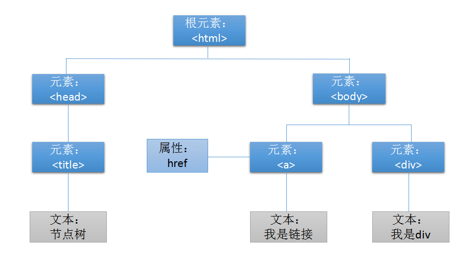

Web 前端基础测试
接下来，我记录了一些实践过程中原先不清楚并且觉得有价值的知识点。
HTML
用 Swiper 实现轮播图
导入插件
下载插件
进入 Swiper 官网 http://www.swiper.com.cn/download/index.html，只需要下载
swiper-4.2.2.min.js和swiper-4.2.2.min.css就可以了。引入插件
1
2
3
4
5
6
7
8
9
10
11
<html>
<head>
...
<link rel="stylesheet" href="path/to/swiper.min.css">
</head>
<body>
...
<script src="path/to/swiper.min.js"></script>
</body>
</html>
HTML 结构
1
2
3
4
5
6
7
8
9
10
11
12<div class="swiper-container">
<div class="swiper-wrapper">
<div class="swiper-slide">Slide 1</div>
<div class="swiper-slide">Slide 2</div>
<div class="swiper-slide">Slide 3</div>
</div>
<!-- 如果需要分页器（下面的小点点） -->
<div class="swiper-pagination"></div>
<!-- 如果需要导航按钮 （左右按钮）-->
<div class="swiper-button-prev"></div>
<div class="swiper-button-next"></div>
</div>注：
- 这里的 HTML 结构是固定的，不可以随便更改；
- 这里的类是固定的，外面最大的容器类为
swiper-container，放图片的容器类为swiper-wrapper，放图片的类为swiper-slide。
定义 Swiper 的大小。
1
2
3
4.swiper-container {
width: 600px;
height: 300px;
}初始化
Swiper：最好是挨着</body>标签1
2
3
4
5
6
7
8
9
10
11
12
13
14
15
16
17
18
19
20
21
22<script>
var mySwiper = new Swiper ('.swiper-container', {
direction: 'vertical',
loop: true,
autoplay: 3000,
speed: 1000,
// 如果需要分页器
pagination: {
el: '.swiper-pagination',
},
// 如果需要前进后退按钮
navigation: {
nextEl: '.swiper-button-next',
prevEl: '.swiper-button-prev',
},
// 如果需要滚动条
scrollbar: {
el: '.swiper-scrollbar',
},
})
</script>
</body>这里简单介绍一下基本的几个参数：
directiion: 'horizontal'，表示水平滑动，垂直滑动是direction: vertical。默认是水平滑动。loop: true，表示最后一张图片会和第一张图片连起来播放，就像循环播放一样；loop: false，表示最后一张图片是终点。autoplay: 3000，表示自动切换的时间间隔，3000 表示 3 秒。speed: 1000，表示滑动从开始到结束的时间，1000 表示 1 秒。
CSS3 transform 和 transition
实现移动效果
transform 示例
1 | transform: translate(x, y); |
其中 translate() 为实现位移的函数，参数详解：
x表示左右移动，正数表示向右移动，负数表示向左移动。y表示上下移动，正数表示向下移动，负数表示向上移动。
transition 示例
1 | .move p { |
all指所有属性，包括width和height；1s指过渡效果花费的时间；linear指过渡效果的时间曲线，这里是平滑过渡。默认是"ease"，先慢再快最后慢。
结合 transform 和 transition 实现移动效果：
1 | .move:hover{ |

实现缩放效果
transform 属性
基本 html 结构：
1 | <div class="scale"> |
使用 transform 属性：
1 | .scale:hover img { |
scale表示放大或缩小；()里大于 1 表示放大，小于 1 表示缩小；- 第一个数表示
x轴的缩放，第二个数表示y轴的缩放，如果两个数一样，可以用一个数代替。
效果如下：

可以发现，上面的图片超过了边框，而且放大有点突兀。
先解决超出边框的问题，添加如下代码：
1 | .scale { |
可以将图片超出容器的部分设置为隐藏。
transition 属性
通过 transition 属性实现平滑过渡：
1 | .scale img { |

transform-origin
使用该属性表示基于中心进行缩放或移动：
1 | transform-origin: center center; |
参数详解：
- 第一个参数可以为：
left，center，right，定义视图被置于 X 轴的何处； - 第二个参数可以为：
left，center，bottom，定义视图被置于 Y 轴的何处。
它默认是基于中心的。用图表示如下：

完成一个板块
外阴影
下面是基本的 html 结构：
1 | <div class="shadow"></div> |
效果如下：

在左边、右边、下边都添加阴影。
效果如下：

先实现右边和下边的阴影：
1 | .shadow{ |
就 box-shadow: 10px 10px 10px #000; 介绍一下 box-shadow 的属性值：
- 第一个参数表示水平阴影的位置，正数表示右边，负数表示左边；
- 第二个参数表示垂直阴影的位置，正数表示下边，负数表示上边；
- 第三个参数表示模糊距离，就是模糊的程度；
- 第四个参数表示阴影的颜色。
多行省略
在上面的结构中添加一行文字，结构如下：
1 | <div class="shadow"> |

添加以下代码：
1 | .shadow p { |

以上代码实现了单行省略，那如何实现多行出现省略号呢？
这里以 3 行为例，想法是设置好 3 行的高度，每一行的高度也就知道了，在高度范围内隐藏并出现省略号。
1 | .shadow p { |
效果如下：

属性详解：
display: -webkit-box;将对象作为弹性伸缩盒子模型显示；-webkit-box-orient: vertical;设置或检索伸缩盒对象的子元素的排列方式；-webkit-line-clamp: 3;限制在一个块元素显示的文本的行数。
设置圆角
基本结构如下：
1 | <div class="radius">全部资讯</div> |
通过 border-radius 属性实现圆角效果：
1 | .radius { |
- 四个值分别代表四个圆角，顺序为顺时针方向，第一个为左上角，依次为右上角，右下角，左下角；
- 如果四个角都一样，可以用一个角表示，所以上面可以简写为：
border-radius: 20px;。
效果如下：

清除浮动
浮动出现的问题
基本 html 结构如下：
1 | <div class="container"> |
相应的 css 如下：
1 | .container { |

可以发现，类为 left 和 right 的 div 竟然不在里面，这是因为浮动导致的父元素高度塌陷。
解决办法
下面是一种比较常用的方法，在复杂的结构中也是没问题的。
给类 box1 的 div 添加代码，如下：
1 | .clearfix:after { |

参数详解：
content: ""; height: 0;设置伪类内容为空，高度为 0；display: block; visibility: hidden;设置它为一个不可见的块级元素；clear: both;该属性的值指出了不允许有浮动对象的边，both指左右两边；
CSS
背景
背景颜色
设置元素的 background-color 属性：
1 | body { |
背景图片
使用 background-image 属性设置元素的背景属性：
1 | background-image: url("图片链接") |
指定了背景图像之后，默认背景图是平铺重复显示。如果想要设置图像在水平方向、垂直方向平铺或其他方式，可以设置 background-repeat 属性。
具体属性值设置如下：
| 样式 | 属性值 |
|---|---|
| 水平平铺重复 | repeat-x |
| 垂直平铺重复 | repeat-y |
| 不重复平铺 | no-repeat |
默认平铺
1
2
3body { /*设置背景图片*/
background-image: url("./Assert/sun.jpg");
}repeat-x1
2
3
4body { /*设置背景图片*/
background-image:url("./Assert/sun.jpg");
background-repeat: repeat-x;
}repeat-y
1 | body { /*设置背景图片*/ |
no-repeat
1 | body { /*设置背景图片*/ |
背景定位与背景关联
1、背景定位
当图像作为背景和文本显示在同一个位置时，为了页面排版更优美、更易于文本的阅读，我们可以使用 background-position 属性改变图像在背景中的位置：
1 | background-position: right top; |
设置 right top\top right 都代表放置在元素内边距区的右上角。
对于具体位置，可以使用如下关键字的组合：
| 属性值 |
|---|
top left |
top center |
top right |
center left |
center center |
center right |
bottom left |
bottom center |
bottom right |
如果只定义了一个关键字，第二个值默认是 center。
2、背景关联
当页面较长时，滚动页面，背景图像也会随之滚动。当文档滚动到超过图像的位置时，图像就会消失。如果想要背景图像不随页面滚动而改变位置。可以使用 background-attachment 属性，将其值设置为 fixed：
1 | background-attachment: fixed; |
其属性值可以选择：
| 值 | 描述 |
|---|---|
| scroll | 背景图片随着页面的滚动而滚动（默认值）。 |
| fixed | 背景图片不会随着页面的滚动而滚动。 |
| local | 背景图片会随着元素内容的滚动而滚动。 |
| inherit | 指定 background-attachment 的设置应该从父元素继承。 |
简写背景：
为了简化背景属性的书写，可以将这些属性合并在同一个属性中：
2
3
background: #ffffff url("...") no-repeat fixed right top;
}使用简写属性时，属性值的顺序为：
background-color；background-image；background-repeat；background-attachment；background-position；
表格样式
表格边框
使用 border 属性为表格添加边框。border 属性值按顺序分别设置 border-width、border-style 和 border-color。
其中，border-style 可以取以下四种值：
dotted：点状；solid：实线；double：双线；dashed：虚线；
例如：
1 | th, |
由于表格单元格元素间有独立的边界，这样设置的表格会有双边框。我们可以使用 border-collapse 属性设置折叠边框：
separate：默认值，边框会分开。collapse：边框会合并为一个单一的边框。
例如：
1 | table { |
表格颜色
- 使用
color设置表格中的文字颜色； - 使用
background-color设置单元格背景色；
1 | th /* 表头 */ |
表格文字对齐与文字粗细
- 使用
text-align属性设置表格中文字对齐的方式，与设置段落文字对齐的方式相同（表格单元格默认为左对齐）。 - 使用
font-weight属性设置表格文字粗细，与设置段落文字粗细相同。
例如：
1 | caption { |
*表格宽度和高度
在表格元素中使用 width 和 height 属性设置表格的宽度与高度：
1 | table { |
使用 HTML/CSS 实现 Educoder 顶部导航栏
1 |
|
正常显示效果如下：

未设置 min-width 而导致的出错情况：
JavaScript
现在开发人员常说的 JavaScript 包含三个部分：ECMAScript、浏览器对象模型（BOM）和文档对象模型（DOM）。
对象属性的检测和枚举
- 自有属性或者方法，是指对象自己定义的属性或者方法，而不是从原型链上继承来的。
- 可枚举性（
enumerable），这是对象的属性的一个性质，用户自己定义的属性默认为可枚举，系统内置的对象的属性默认为不可枚举。
JS 中的正则表达式
正则表达式能够定义一类具有相同特征的字符串。
在 javascript 创建 RegExp 对象：
使用 new 关键字
1
var myFirstPattern = new RegExp("s$");
使用表达式赋值
1
var easyPattern = /s$/;
正则表达式的构成
字符串字面量
单纯的字符或字符串。
1
2
3var pattern = /aa/;
pattern.test("aabb"); //true
pattern.test("abb"); //false常用的特殊符号：
字符 匹配 \n 换行符 \f 换页符 \t 制表符 \v 垂直制表符 \r 回车符 字符类
字符类被放在中括号之内，匹配一类字符中的任意一个。
1
2
3
4var lowerCharPattern = /[a-z]/;//匹配任意小写字母
var upperCharPattern = /[A-Z]/;//匹配任意大写字母
var numberPattern = /[0-9]/;//匹配任意数字
var mixPattern = /[a-zA-Z0-9]/;//匹配大小写字母，数字在中括号内最前面加上
^符号表示反向匹配。1
2
3var notNumberPattern = /[^0-9]/;
notNumberPattern.test("123"); //false
notNumberPattern.test("ahc"); //true字符 匹配 等价于 \w 大小写字符或数字 [a-zA-Z0-9] \W 非字母，非数字 [^a-zA-Z0-9] \d 数字 [0-9] \D 非数字 [^0-9] 重复
重复表示指定的字符或者字符串可以连续出现多次。
表达式 匹配 等价于 {a,b} 至少出现a次，最多出现b次 {a,} 至少出现a次 {a} 出现a次 {a,a} + 最少出现一次 {1,} ? 出现一次或者不出现 {0,1} * 至少出现0次 {0,} 对于
?、+等表示特殊含义的字符，在JavaScript中，使用\实现特殊符号的普通化，叫做转义：1
2var pattern1 = new RegExp("\?");//匹配一个问号
var pattern2 = /\+{4}/;//匹配四个加号选择
选择使用符号
|来实现，比如0|1表示匹配0或者1，\d|a表示匹配数字或者字母a。你可以使用圆括号限制
|符号的作用范围，例如：1
var pattern = /(0|1)ABC/;//选择符号仅仅作用在0和1上
分组
分组的符号是
()，括号中是单独的项构成的子表达式，将这些子表达式看成一个整体进行操作，例如：1
var pattern = /(hello){2}/;//匹配字符串hellohello
引用
引用，就是在后面使用和前面完全相同的子表达式。
从 1 开始，从左到右，给所有的带圆括号的子表达式编号。在后面可以用
\1引用编号为1的子表达式。比如：1
var pattern = /(A|B)(\d{5})not([0-9])\1\2/;
pattern在最后引用了第一个和第二个子表达式。注意： 这里的引用是对与子表达式匹配的字符串的引用，而不是简单的对子表达式的引用。
1
2
3var pattern = /([a-z])([a-z])([a-z])\3\2\1/;
pattern.test("abccba");//返回true
pattern.test("abcdefg");//返回false匹配位置
^用来匹配字符串的开头；$用来匹配字符串的结尾；\b用来匹配单词的边界，即英文字母和非英文字母之间的界限；
修饰符
修饰符用来描述一些整体的匹配规则，有
i、g、m三种。修饰符需要放在表达式
/.../符号之后；如果通过新建 RegExp 对象定义正则表达式，则修饰符作为第二个参数。1
2var pattern1 = /^java/m;
var pattern2 = new RegExp("^java","m");i表示整个的匹配过程中不区分大小写；g表示执行全局匹配，即找出所有满足匹配的子字符串。比如，已知match()函数返回由匹配结果组成的数组，如果没有匹配到返回null。不用
g修饰时：1
2var pattern = /[a-z]/; //匹配小写字母
console.log("a1b2c3".match(pattern)); //输出["a", index: 0, input: "a1b2c3"]显然，只匹配到了第一个小写字母
a。用
g修饰时：1
2var pattern = /[a-z]/g; //全局匹配小写字母
console.log("a1b2c3".match(pattern)); //输出["a", "b", "c"]三个小写字母都被匹配到了。
m在多行模式中执行匹配，即：符号^不仅匹配整个字符串的开头，还匹配每一行的开头，&不仅匹配整个字符串的结尾，还匹配每一行的结尾。1
2
3var pattern = /[0-9]$/m; //多行匹配以数字结尾的字符串
var string = "1\nhello"; //字符串在两行，中间的\n是换行符
console.log(pattern.test(string)); //输出true
使用正则表达式
字符串比较常用的方法有 search()、replace()、match() 和 split()，这些方法的调用者都是字符串对象，参数中都有正则表达式。
search(a)
参数：a 为正则表达式。
功能：返回字符串中与该正则表达式匹配的第一个子串的起始位置，无匹配返回-1。
1 | var pattern = /[0-9]/; |
split(a) 方法
参数：a 是字符串或者正则表达式；
功能：以 a 为分隔符分隔原来的字符串；
返回值：分割后形成的子字符串数组。
1 | console.log("a1b2c3d".split(/[0-9]/));//以数字为分隔符，输出["a", "b", "c", "d"] |
replace(a,b)方法
参数：a 是正则表达式，b 是字符串；
功能：用 b 替换掉第一个和 a 匹配的子串，如果 a 中有修饰符 g，替换掉所有子串；
返回值：被替换后的字符串。
1 | var pattern1 = /[0-9]/; |
复杂的情况：b 还可以是子表达式 $1、$2 等，$1 等会先被替换为与它匹配的子串。比如：
1 | var pattern = /([0-9])[A-Z]/g; |
上面的$1指的是与子表达式[0-9]匹配的子字符串，比如第一个匹配1A中$1指的是1，第二个匹配2B中$1指的是2，依次类推。
JSON
JSON 对象
JSON 对象是一种文本数据的交换格式，用于存储和传输数据。
例如：
1 | {"name":"Jerry", "age":15} //属性名必须包裹在双引号中 |
具体规则为：
- 数据以键/值对的形式存在；
- 数据之间用逗号间隔；
- 大括号表示保存对象；
- 方括号表示保存数组。
属性值可以是以下任意一种数据类型：数字、字符串、数组、JSON 对象、null。
JSON字符串
在前端和后台之间传递数据使用的是 JSON 字符串，JSON 对象是不可以直接进行传递的。
JSON 字符串就是在 JSON 对象两边套上 ' 形成的字符串，如：
1 | var JSONObject = {"k1":"v1","k2":"v2"};//JSON对象 |
JSON 字符串到 JavaScript 对象
JSON.parse(a,b)方法将 JSON字符串a转换为 JavaScript 对象。b是一个可选的函数参数。函数参数
b按从里到外的顺序作用在对象的所有属性上，最后一个作用的是对象本身：1
2
3
4
5
6
7
8//对象的每一个属性的值加1
var text = '{ "key1":1, "key2":2, "key3":2.2}';
var obj = JSON.parse(text, function (key, value) {
if(key === '') //当遇到对象本身时，不进行加1操作
return value;
return value+1; //对属性值加1
});
console.log(obj); //输出Object {key1: 2, key2: 3, key3: 3.2}如上面所示，函数的参数有两个，其中
key表示属性的名字，value表示属性的值，当遇到对象本身时，key的值为''，即空字符串。JSON 对象转换为 JSON 字符串
JSON.stringify(a,b,c)，a是待转换的 JSON 对象，b和c为可选参数。参数
b为函数时，该函数按照从里到外的顺序处理 JSON 对象的每一个属性，最后一个处理的是 JSON 对象本身，处理完后再转为 JSON 字符串：1
2
3
4
5
6
7
8//对象的所有属性值加1，再转为字符串
var JSONObject = {"k1":1,"k2":2.2};
var JSONString = JSON.stringify(JSONObject,function(k,v){
if(k === '') //处理到了JSON对象本身
return v;
return v+1; //所有的属性的值加1
});
console.log(JSONString); //输出{"k1":2,"k2":3.2}参数
b还可以是数组，数组存储的是属性的名字，用来指定只转换哪些属性：1
2
3
4//转换对象中特定的属性
var JSONObject = {"k1":1,"k2":2.2,"k3":3};
var JSONString = JSON.stringify(JSONObject,["k1","k2"]);
console.log(JSONString);//输出{"k1":1,"k2":2.2}参数
c：文本添加缩进、空格和换行符，如果c是一个数字，则返回值文本在每个级别缩进指定数目的空格，如果c大于10，则文本缩进10个空格。1
2
3
4
5
6
7
8
9var str = ["name":"Tom","age":16];
var obj1 = JSON.stringify(str);
var obj2 = JSON.stringify(str,null,4);
console.log(obj1); //输出{"name":"Tom","age":16}
console.log(obj2); //输出
//{
// "name": "Tom",
// "age": 16
//}
jQuery
使用 jquery 需要先安装 jquery 库，可以从 CDN 载入也可以下载在本地导入。
jQuery 基础
基本语法： $(selector).action()
1 | $("#box").html("hello jquery"); |
jQuery 用美元符号 $ 定义。
selector
selector（选择器）表示要操作的 DOM 元素。
id 选择器
$("# + idName")类选择器
$(". + className")元素选择器
$("tagName")过滤选择器
获取第一个：
$("li:first")获取最后一个：
$("li:last")获取下标为偶数的：
$("li:even")获取下标为奇数的：
$("li:odd")获取指定序号的元素：
$("li:eq(index)")注意：序号是从0开始的。
获取指定元素之外的元素：
$("li:not(:last)")即，获取除最后一个 li 元素之外的所有 li 元素。
层次选择器
$(".container p:first span")获取
.container标签下第一个p元素下所有的span元素。
$(this) 指的是当前操作的DOM元素。
action
action 表示要执行的操作，即目标元素所要执行的一个方法。
html(value)：()里有内容，表示向该元素内添加内容；没有内容，表示获取内容。css(attr,value)||css(object)：单个声明的情况第一个参数是属性名，第二个参数是属性值；多个声明的情况，只需要一个参数，即包含多个键值对的对象。show()：原理相当于 css 中的display: block;，可以实现元素的显示。hide()：原理相当于 css 中的display: none;，可以实现元素的隐藏。addClass()：给所选择的元素添加类，可以接受一个字符串，多个类名间以空格间隔。removeClass()：给所选择的元素删除类，参数与addClass()方法相同。
jQuery DOM 操作
获取元素内容和属性
基本 html 结构：
1 | <p><srtong>我是 srtong 标签</strong>我是文本内容</p> |
获取元素内容
两种获取 p 标签内容的方法：
$("p").text();$("p").html();
效果如图：

text()是获取所选元素的文本内容，html标签的内容已经转化；html()是获取所选元素的内容，包括html标签。
获取 input 标签的 value 值：
1 | var val = $("input").val(); |
获取元素的属性
使用 attr() 获取 div 的各种属性：
1 | console.log($(".box").attr("class")); |
设置元素内容和属性
设置元素内容
基本 html 结构：
1 | <p class="first"></p> |
代码如下：
1 | $(".first").text("<h3>我是第一个</h3>"); |
以 text() 为例，text() 表示获取内容，text(content) 表示设置内容。
设置元素属性
基本 html 结构：
1 | <div class="box" id="wrap" name="容器" data-count="none"></div> |
通过 attr(att,newValue) 设置，代码如下：
1 | $("div").attr("class","alterClass"); |
把一个对象传给方法，可以设置多个属性：
1 | $("div").attr({ |
增删元素
增添元素
基本 html 结构：
1 | <button class="btn1">添加内容 </button> |
1、元素内添加
在类名为 box 的元素中添加内容：
append()在被选元素的结尾插入内容；prepend()在被选元素的头部插入内容。
代码如下：
1 | $(".btn1").click(function(){ |
2、元素外添加
在类名为 box 的元素外添加内容：
before()在被选元素之前插入内容；after()在被选元素之后插入内容。
代码如下：
1 | $(".btn1").click(function(){ |
删除元素
基本 html 结构：
1 | <button class="btn">删除内容</button> |
remove()删除被选元素及其子元素；1
2
3$(".btn").click(function(){
$(".box").remove();
})empty()只删除被选元素的子元素；1
2
3$(".btn").click(function(){
$(".box").empty();
})
jQuery 动画
jQuery 自带的动画效果基本都是这样的语法：
1 | $(selector).method(speed, callback); |
其中：
selector是要操作的元素；method是 jQuery 自带的动画名，比如show，hide，toggle；speed是动画运动的速度，参数可选，可有可无；callback是这个动画完成后需要执行的动作，参数可选，可有可无。
隐藏和显示
show() 和 hide()
基本 html 结构：
1 | <div class="box"></div> |
使用 hide() 隐藏元素：
1 | $(".box").hide(2000,function(){ |
第一个参数表示这个动画执行的速度，取值如下：
"slow"，表示慢速度；"fast"，表示快速度；- 毫秒，可自定义，上面是 2 秒。
第二个参数是一个函数，在隐藏这个动作完成之后执行的动作。
show() 方法同理。
toggle()
toggle() 可以切换 hide() 和 show()，把隐藏的元素显示，显示的元素隐藏。
基本 html 结构如下：
1 | <button class="toggle">toggle</button> |
使用 toggle() 切换状态：
1 | $(".toggle").click(function(){ |
淡入和淡出
fadeIn()，fadeOut() 和 fadeToggle()
jQuery 的动画语法都是一样的，只是动画名称不一样。
fadeIn()相当于show()，透明度从 0 变为 1；fadeOut()相当于hide()，透明度从 1 变为 0；fadeToggle()相当于toggle()，透明度的切换，透明的变为不透明，不透明的变为透明。
fadeTo()
可以将透明度设置为一个特定值，例如：
1 | $(".item").fadeTo("slow",0.8); |
注意：
fadeTo()的前两个参数是必需的；fadeTo()的第三个参数（callback 函数）是可选的。
delay()
使用 delay() 可以延迟动画的执行时间，参数取值如下：
"slow"，慢速度；"fast"，快速度；- 毫秒，自定义延迟时间。
1 | $(".first").fadeTo(2000,0.5); |
动画开始，第一张图片透明度从 1 变为 0.5，速度为 2s；第二张图片在延迟 2s 后，透明度也从 1 变为 0.5，速度为 2s；两张图片一起淡出，速度为 slow。
注意，代码的执行没有延迟，在第一张图片变化开始的同时，第二张图片的延迟也已经开始了。即第一张图片的透明度变化与第二张图片变化的延迟是同步的。
滑动
slideDown()，slideUp() 和 slideToggle()
slideDown()是向下滑动元素，元素的高度从 0 变为已有的高度；slideUp()是向上滑动元素，元素的高度从现在的高度变为 0；slideToggle()是切换滑动效果，向上滑动的变为向下滑动，向下滑动的变为向上滑动。

1 | $(".menu").mouseenter(function(){ |
- 当鼠标浮动到菜单时， 菜单内容向下滑动，速度为 1s；
- 当鼠标离开菜单时， 菜单内容向上滑动，速度为 1s。
自定义动画
基本 html 结构：
1 | <button class="stop">动画开始</button> |
实现平移动画
先实现往右移动，代码如下：
1 | $(".item").animate({left: '500px',width:'200px',fontSize:'50px'},2000) |
说明如下：
移动改变的是
left值和top值，所以在样式中一定要有**定位position**。否则，没有定位，也就没有了left属性和top属性，也就不能移动了；基本结构中的样式
left:100px作为初始状态，往右移动的实现代码中，left:'500px'作为这个动画的最终状态，实际上移动了400px；2000表示这个动画完成的时间，是 2000 毫秒；在往右移动的代码中添加了宽度和字体。
需要注意的是，属性中带有 - 的，在动画中也都用驼峰命名法，其规则如下：
- 第一个单词以小写字母开始；
- 从第二个单词开始以后的每个单词的首字母都大写。
比如，font-size 的写法变成了 fontSize。
同样，实现左移的过程的代码如下：
1 | $(".item").animate({left: '100px', width: '10px', fontSize: '24px'}, 2000) |
jQuery 最大的特点就是可以链式调用，右移左移的过程，简写如下：
1 | $(".item").animate({left: '500px',width:'200px',fontSize:'50px'},2000) .animate({left: '100px', width: '10px', fontSize: '24px'}, 2000) |
使用相对值
使用相对移动的距离，代码如下：
1 | $(".item").animate({ left: '+=200px', borderRadius: '50%'},2000) |
这行代码表示向右移动的距离为 200px，在移动的过程中，从正方形变为圆 , 左移用 -=。
stop() 参数
stop() 可以停止被选元素当前的动画，例如：
1 | $(".stop").click(function(){ |
不过，现在还有一个问题：
1 | $(".item").animate({ left: '+=200px', borderRadius: '50%'},2000) |
当连续多次点击动画开始按钮，点击完毕后，动画还在执行（即点击多少次，执行多少次），而我们需求是把一个时间段的连续点击作为一次点击。连续点击的效果图如下：

解决办法就是，在第一个动画执行完后，把后面等待的动画都清除掉。后面等待的动画可以看作一个队列，只要把这个队列清除就可以了。
这里可以使用停止动画的方法 stop()，它有两个可选参数，详情如下：
- 第一个参数：是否清除动画队列，默认是
false； - 第二个参数：是否立即完成当前动画，默认是
false。
实现代码如下：
1 | $(".item").stop(true,false).animate({left: '+=200px', borderRadius: '50%'}, 2000) |
效果如下:

把 stop() 的第二个参数设为 true，效果如下：

当连续点击第二次的时候，第一次的动画会立即执行，就会出现“闪现”的情况。
注意，jQuery 动画能操作的属性都是有数值的，比如：width,height,opacity,font-size,left 等。而颜色、背景色等是不能操作的，想用的话，有颜色动画插件，可以自己试一下。
jQuery 遍历
节点树
基本 html 结构如下：
1 |
|
把他转化为 DOM 节点树的效果如下：
遍历祖先元素
parent()
给 span 元素的父元素设置背景色：
1 | $("span").parent().css("background","lightgreen"); |
parents()
给 span 元素的所有祖先元素设置背景色：
1 | $("span").parents().css("background","orange"); |
遍历后代元素
children()
给 div 元素的所有直接子元素设置背景色：
1 | $("div").children().css("background","lightgreen"); |
find()
给 div 下的所有指定元素设置背景色：
1 | $("div").find("span").css("background","orange"); //选择 div 下的所有 span 元素 |
遍历兄弟元素
siblings()
给 span 元素的所有兄弟元素设置背景色：
1 | $("span").siblings().css("background","orange"); |
next()
给 span 元素的后一个兄弟元素设置背景色：
1 | $("span").next().css("background","orange"); |
nextAll()
给 span 元素后的所有兄弟元素设置背景色：
1 | $("span").nextAll().css("background","orange"); |
prev() 和 prevAll()
prev() 和 next() 相对应，它返回的是被选元素的前一个兄弟元素。
prevAll() 和 nextAll() 相对应，它返回的是被选元素前的所有兄弟元素。
过滤
基本 html 结构：
1 | <div class="container"> |
first()
给 div 下的第一个 p 元素设置背景色：
1 | $("div p").first().css("bakcground","orange"); |
通过过滤选择器实现：
1 | $("div p:first").css(...); |
last()
给 div 下的最后一个 p 元素设置背景色：
1 | $("div p").last().css("background","orange"); |
通过过滤选择器实现：
1 | $("div p:last").css(...); |
eq()
给 div 下的第三个 p 元素设置背景色：
1 | $("div p").eq(2).css("background","orange"); //索引是从 0 开始的 |
通过过滤选择器实现：
1 | $("div p:eq(2)").css(...); |
filter()
给 div 下 class="active" 的 p 元素设置背景色：
1 | $("div p").filter(".active").css(...); |
通过过滤选择器实现：
1 | $("div p.active").css(...); |
not()
给 div 下没有 class="active" 的 p 元素设置背景色：
1 | $("div p").not(".active").css("background","orange"); |
通过过滤选择器实现：
1 | $("div p:not(.active)").css(...); |